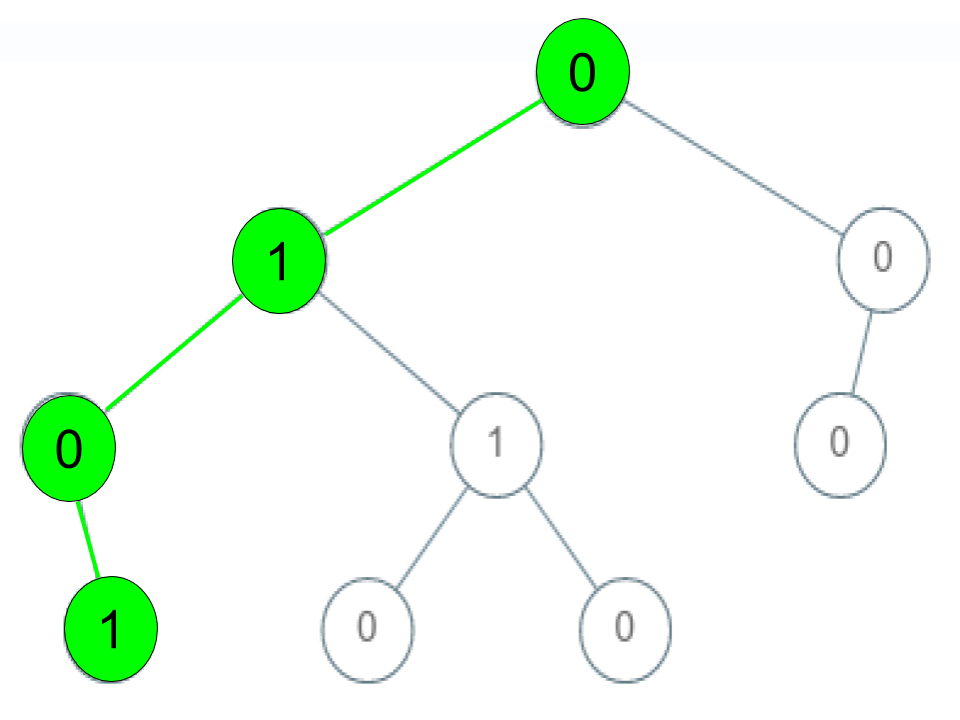
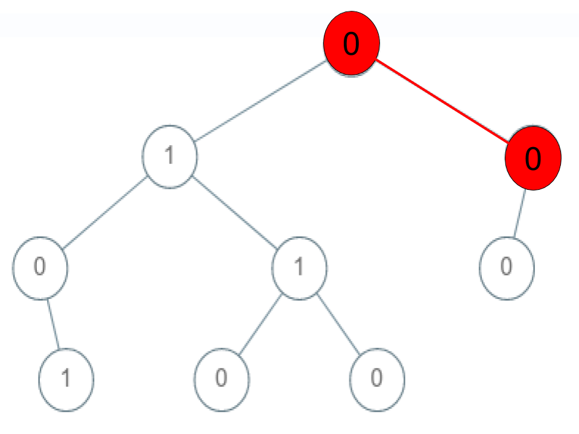
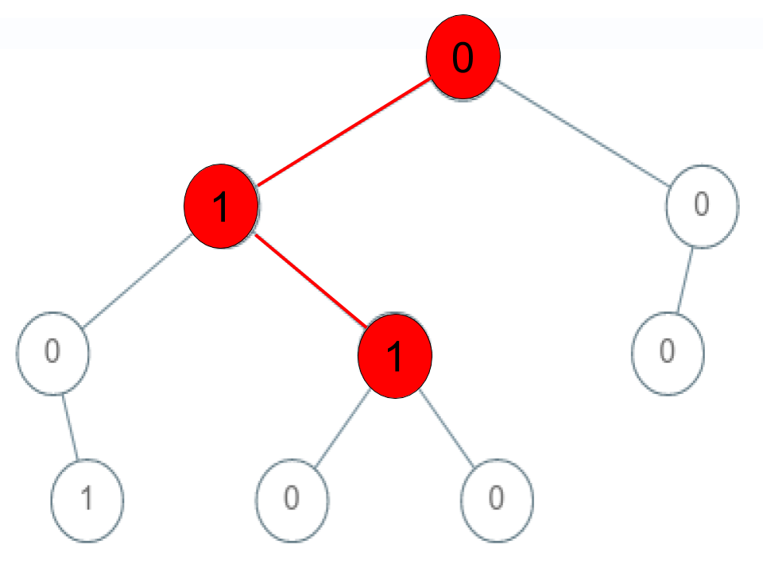

| Category | Difficulty | Likes | Dislikes |
|---|---|---|---|
| Algorithms | Medium | 219 | 15 |
tree | depth-first-search | breadth-first-search | binary-tree
Given a binary tree where each path going from the root to any leaf form a valid sequence, check if a given string is a valid sequence in such binary tree.
We get the given string from the concatenation of an array of integers arr and the concatenation of all values of the nodes along a path results in a sequence in the given binary tree.
Example 1:

Input: root = [0,1,0,0,1,0,null,null,1,0,0], arr = [0,1,0,1]
Output: true
Explanation:
The path 0 -> 1 -> 0 -> 1 is a valid sequence (green color in the figure).
Other valid sequences are:
0 -> 1 -> 1 -> 0
0 -> 0 -> 0Example 2:

Input: root = [0,1,0,0,1,0,null,null,1,0,0], arr = [0,0,1]
Output: false
Explanation: The path 0 -> 0 -> 1 does not exist, therefore it is not even a sequence.Example 3:

Input: root = [0,1,0,0,1,0,null,null,1,0,0], arr = [0,1,1]
Output: false
Explanation: The path 0 -> 1 -> 1 is a sequence, but it is not a valid sequence.
Constraints:
1 <= arr.length <= 50000 <= arr[i] <= 9